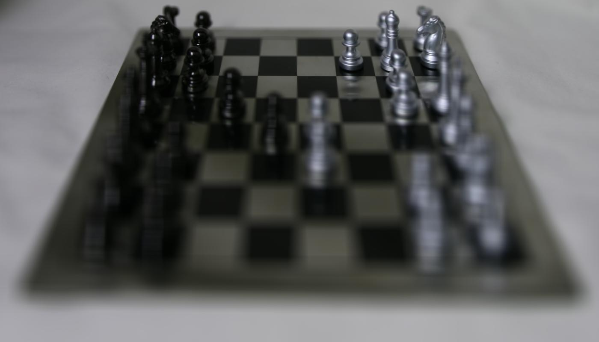
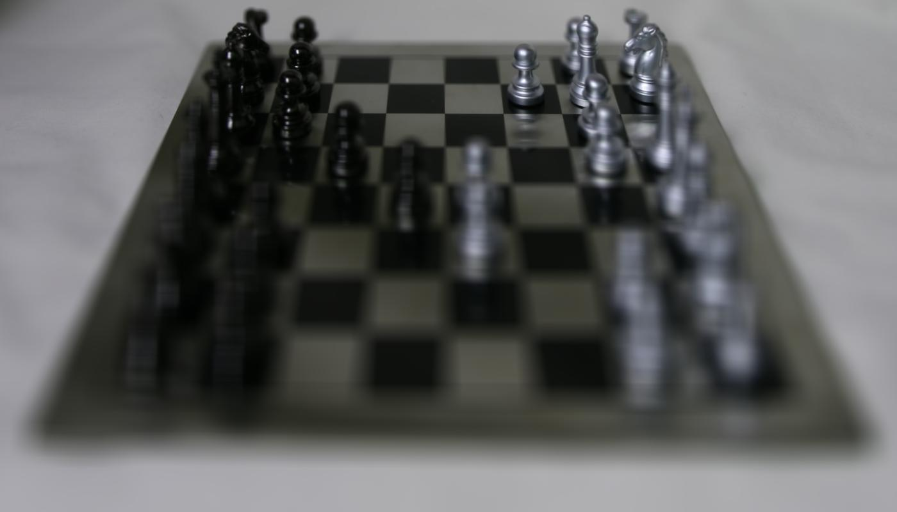
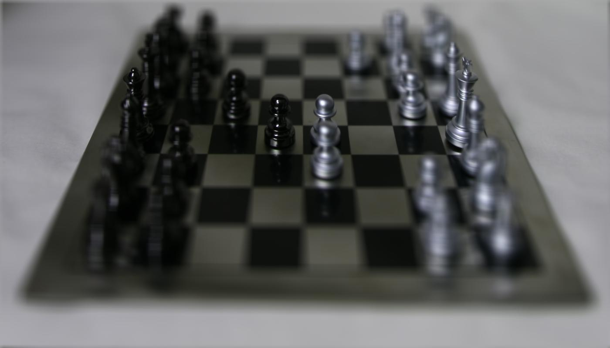
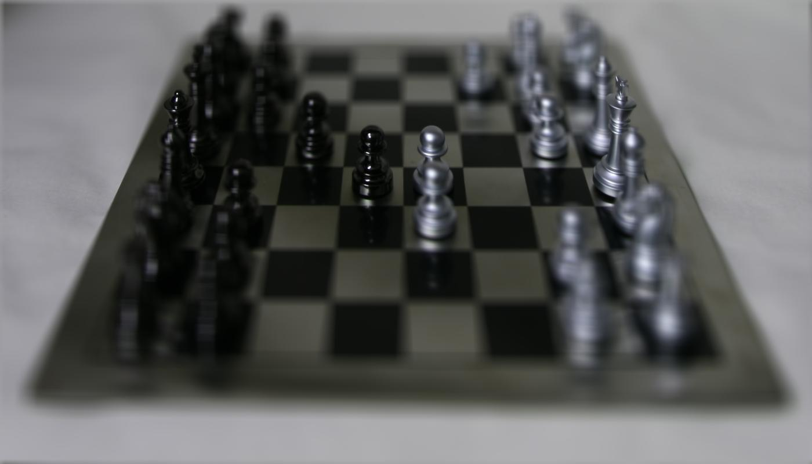

scale = 0


scale = 1


scale = 2
scale = 3
In this project we demonstrate how capturing multiple images over a plane can lead to cool post-processing effects like depth refocusing and aperture adjustment. We show how this works by using image datasets from the Stanford Light Archive to demonstrate that we can achieve these effects simply with a few operations!
By shifting and averaging the various data, we can achieve a refocusing effect. With no shifting, the focus is on the far-away objects. The center image is set to be at position (8, 8) and we shift each of the other images to be aligned with this center image. By increasing the shifting factor, we can alter the focus portion so that the closer objects and sharper instead. The results are shown below:
To adjust the aperture, we can use a similar process as from above, except we only average a subset of the images given. For example, using only the center (8, 8) image (aperture = 0) would give us a clear image, similar to a pinhole camera, As we increase the aperture, we are using more images, causing a smaller range of the photo to appear in focus. For example, if our aperture is 2, then we use all the images within 2 coordinates of the center (8, 8). Below are the results from the portion of the project: